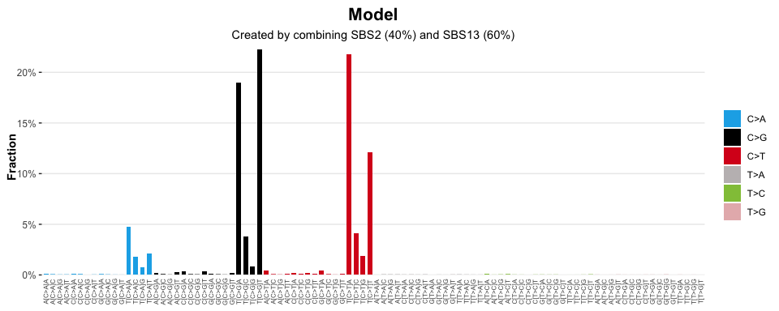

sigstats enables common mathematical operations / transformations to be applied to sigverse style signatures / catalogues
Installation
You can install the development version of sigstats like so:
if (!require("pak", quietly = TRUE))
install.packages("pak")
pak::pak("selkamand/sigstats")Quick Start
library(sigstats)
library(sigstash)
library(sigvis)
# Load a signature collection
signatures <- sig_load("COSMIC_v3.3.1_SBS_GRCh38")
# Create a model that represents a mix of SBS2 (40%) and SBS13 (60%)
model <- c(SBS2 = 0.4, SBS13 = 0.6)
# Add selected signatures to the combined model
combined_signatures <- sig_combine(signatures, model)
# Visualise result
sig_visualise(
combined_signatures,
class = "model",
title = "Model",
subtitle = "Created by combining SBS2 (40%) and SBS13 (60%)"
)
#> ✔ All channels matched perfectly to set [sbs_96]. Using this set for sort order
#> ✔ All types matched perfectly to set [sbs_type]. Using this set for sort order
#> ✔ Types matched perfectly to palette [snv_type]
Reconstruct a mutation catalogue from a signature model
We often need to reconstruct a catalogue (or tally) from our signature model.
# Load a signature collection
signatures <- sig_load("COSMIC_v3.3.1_SBS_GRCh38")
# Create a model that represents a mix of SBS2 (40%) and SBS13 (60%)
model <- c(SBS2 = 0.4, SBS13 = 0.6)
# Create a new signature by combining SBS2 and SBS13 in ratios dictated by the above model
signature <- sig_combine(signatures, model, format = "signature")
# Reconstruct a perfect catalogue describing what the mutational profile of a sample
# with 200 mutations and the given signature model would look like
reconstuction <- sig_reconstruct(signature, n=200)
# Visualise result
sig_visualise(
reconstuction,
class = "catalogue",
title = "Reconstructed Catalogue",
subtitle = "Expected profile of a sample with 200 mutations: 40% from SBS2, 60% from SBS13"
)
#> ✔ All channels matched perfectly to set [sbs_96]. Using this set for sort order
#> ✔ All types matched perfectly to set [sbs_type]. Using this set for sort order
#> ✔ Types matched perfectly to palette [snv_type]